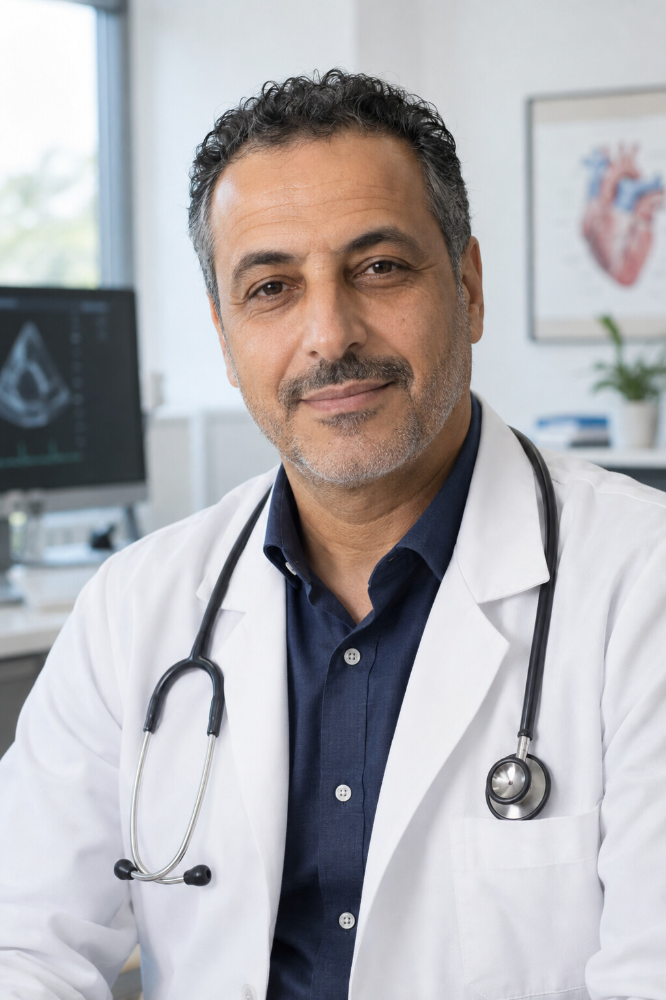

Nos praticiens et leurs disponibilités

Dr Khalid Asadi
Médecine générale
Le Dr Khalid Asadi exerce au sein de MediCentre Nova. Cette fiche permet de consulter les prochaines disponibilités proposées dans le cadre de la démonstration DoctoRDV.
Prochaines disponibilités
- Lundi 21 septembre — 09:00
- Lundi 21 septembre — 10:30
- Lundi 21 septembre — 11:30 — Indisponible
- Mardi 22 septembre — 14:00
- Mercredi 23 septembre — 08:30
Vous devez être connecté avec un compte patient pour réserver un rendez-vous.
Se connecterDr Thomas Rivière
Pédiatrie
Le Dr Thomas Rivière exerce au sein de MediCentre Nova. Il assure le suivi médical des enfants et propose différentes consultations pédiatriques.
Prochaines disponibilités
- Lundi 21 septembre — 13:30
- Mardi 22 septembre — 09:00
- Mardi 22 septembre — 10:00 — Indisponible
- Jeudi 24 septembre — 14:30
- Jeudi 24 septembre — 16:00
Vous devez être connecté avec un compte patient pour réserver un rendez-vous.
Se connecterDr Sarah Fontaine
Dermatologie
Le Dr Sarah Fontaine exerce au sein de MediCentre Nova. Elle reçoit les patients pour des consultations et suivis dermatologiques courants.
Prochaines disponibilités
- Mardi 22 septembre — 08:30
- Mardi 22 septembre — 11:00
- Mercredi 23 septembre — 14:00
- Mercredi 23 septembre — 15:30 — Indisponible
- Vendredi 25 septembre — 10:30
Vous devez être connecté avec un compte patient pour réserver un rendez-vous.
Se connecter